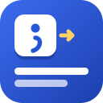

Snippet Keys privacy policy
Effective October 2, 2026
Snippet Keys is a Chrome extension by Kevin Fitzgerald. It does not collect your data. There is no account, no analytics and no server of ours: what you save stays in your browser on this computer.
What it keeps on your computer
- Your snippets (abbreviation, name, text, folder)
- The sites you turned on (host names only)
- Typing settings and how often each snippet was used
- Your license key, if you buy Pro
This lives in the browser's own extension storage. Removing the extension deletes it.
Network
Snippet Keys never sends your snippets or what you type anywhere. On the sites you turn on it looks only at the few characters just typed before the caret, to spot an abbreviation; nothing about the page is stored. The only network request is checking a Pro license key with Lemon Squeezy, when you activate it and every two weeks.
Pro purchases
Pro is sold by Lemon Squeezy, which handles the payment and emails your license key. Lemon Squeezy's own privacy policy covers that purchase. When you activate a key, Snippet Keys sends the key and a device label (such as "Snippet Keys on macOS") to Lemon Squeezy's license server to check it, and checks it again about every two weeks.
Permissions
- storage: Keeps the user's snippets, the sites they turned on, their typing settings and use counts on this computer.
- activeTab: Lets the toolbar list (or its shortcut) insert a snippet into the tab the user clicked it on, and lets the popup see that tab's address to offer 'Turn on for this site'. Only that tab, only until it navigates.
- scripting: Registers the expansion script for each site the user turned on (and removes it when they turn the site off), and inserts a picked snippet into the current tab.
- optional:https://*/* and http://*/*: Never asked for as a whole. When the user clicks 'Turn on for this site', Chrome asks for access to that one site only, so abbreviations typed there can expand. Turning the site off gives the access back.
- optional:clipboardRead: Asked for only when the user saves or uses a snippet containing {clipboard}, or ticks 'Allow {clipboard}'. The clipboard is read only at the moment such a snippet expands.
- optional:https://api.lemonsqueezy.com/*: Asked for only when the user activates a Pro license key, to check the key.
- api.lemonsqueezy.com (asked only when you activate a key): to check your Pro license key.
Sharing and selling
Nothing is sold or shared. No data is used for advertising, credit or lending.
Children
Snippet Keys isn't directed at children under 13 and collects nothing from anyone.